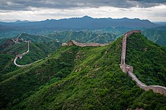

Introduction
The Great Wall of China is a series of fortifications made of stone, brick, tamped earth, wood, and other materials, generally built along an east-to-west line across the historical northern borders of China to protect the Chinese states and empires against the raids and invasions of the various nomadic groups of the Eurasian Steppe with an eye to expansion. Several walls were being built as early as the 7th century BC; these, later joined together and made bigger and stronger, are collectively referred to as the Great Wall. Especially famous is the wall built in 220–206 BC by Qin Shi Huang, the first Emperor of China. Little of that wall remains. The Great Wall has been rebuilt, maintained, and enhanced over various dynasties; the majority of the existing wall is from the Ming Dynasty (1368–1644).
Key Facts
| Country: | China |
| Year Built: | 220–206 BC |